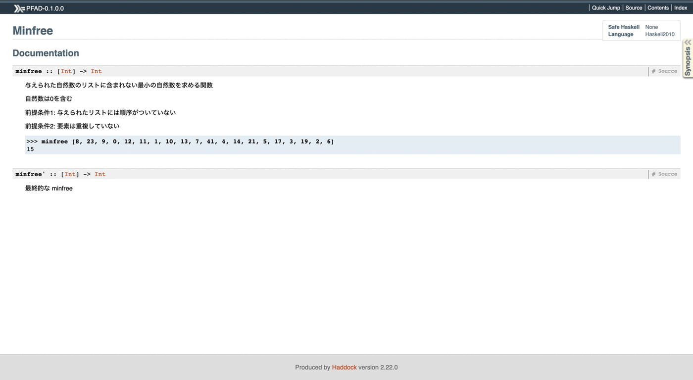
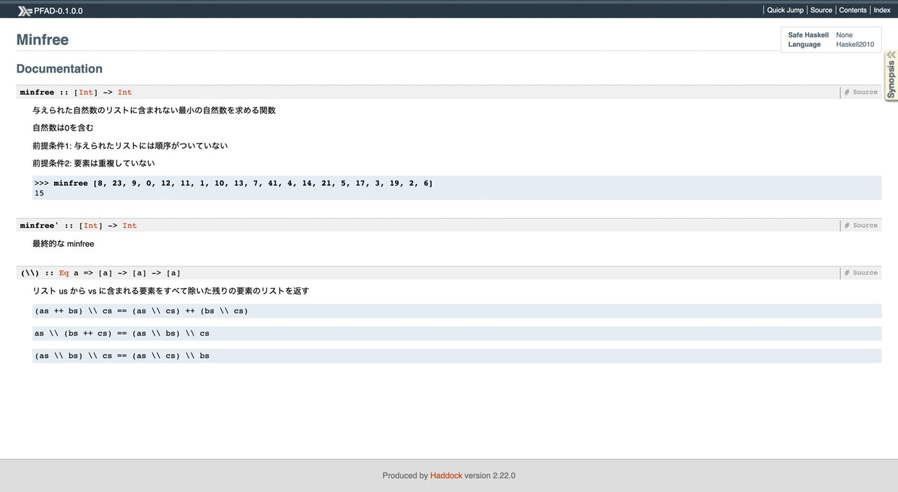

doctest は一言で言えば、Haddock にテストを埋め込んだものです。
例として、以下のような関数とコメントがあった場合に
-- 与えられた価格の消費税を計算する
--
-- calcSalesTax 100.0 == 8.0
calcSalseTax :: Num a => a -> a
calcSalseTax = (*0.08)消費税が 10% に変更になったとしたらプログラムは以下のように修正されるでしょう。
-- 与えられた価格の消費税を計算する
--
-- calcSalesTax 100.0 == 8.0
calcSalesTax :: Num a => a -> a
calcSalesTax = (*0.1)この時、ドキュメントも同様に修正されるべきですが、その保証はどこにもありません。この問題に対する有効な解決策が doctest です。
doctest の準備
まずは package.yaml に doctest のための記述を追加しましょう。
tests:
PFAD-test:
main: Spec.hs
source-dirs: test
ghc-options:
- -threaded
- -rtsopts
- -with-rtsopts=-N
dependencies:
- PFAD
- hspec
- QuickCheck
# ここから下の行を追記
PFAD-doctest:
main: test/doctests.hs
ghc-options:
- -threaded
- -rtsopts
- -with-rtsopts=-N
dependencies:
- PFAD
- doctestこのままでは doctests.hs が見つからずにエラーになるため、以下のファイルを作成します。このファイルに doctest の対象ファイルを記述します。
module Main (main) where
import Test.DocTest
main :: IO ()
main = doctest ["-isrc", "src/Minfree.hs"]これで準備は完了です。
doctest の実行
doctest を実行するためには以下のように stack test コマンドを実行します。
$ stack clean
$ stack test
ビルドのために少し時間がかかります。
...test コンポーネントの個別実行
stack test コマンドを実行した場合、前の章で定義した hspec や QuickCheck のテストも実行されてしまいます。そのため、doctest のテストのみを実行したい場合は、以下のようにします。
$ stack test PFAD:test:PFAD-doctest
...
PFAD-0.1.0.0: test (suite: PFAD-doctest)
Progress 1/2: PFAD-0.1.0.0Examples: 0 Tried: 0 Errors: 0 Failures: 0
PFAD-0.1.0.0: Test suite PFAD-doctest passed
...現時点では doctest を書いていないため、何も起きません。
コマンド実行時エラーが出た時の対処法
また、環境によっては以下のビルドエラーが出る場合があります。
/usr/bin/ld.gold: error: cannot find -ltinfo
collect2: error: ld returned 1 exit status
`gcc' failed in phase `Linker'. (Exit code: 1)上記のエラーが出た場合は以下のように必要なパッケージをインストールしてから、もう一度 stack test を行いましょう。
$ sudo apt install libtinfo-dev
$ stack test
...
PFAD-0.1.0.0: test (suite: PFAD-doctest)
Progress 1/2: PFAD-0.1.0.0Examples: 0 Tried: 0 Errors: 0 Failures: 0
PFAD-0.1.0.0: Test suite PFAD-doctest passeddoctest の書き方
doctest は以下のように、非常に直感的に記述することができます。>>> に続く文字列が ghci によって処理され、その次の行の結果と等しいかどうかをテストするだけです。
それでは minfree 関数に doctest を記述してみましょう。また、最初なので、間違ったテスト結果を書いてみます。
-- |
-- 与えられた自然数のリストに含まれない最小の自然数を求める関数
--
-- 自然数は0を含む
--
-- 前提条件1: 与えられたリストには順序がついていない
--
-- 前提条件2: 要素は重複していない
--
-- >>> minfree [8, 23, 9, 0, 12, 11, 1, 10, 13, 7, 41, 4, 14, 21, 5, 17, 3, 19, 2, 6]
-- "abcde"
minfree :: [Int] -> Int
minfree xs = head ([0..] \\ xs)本当にテストが失敗するか確認します。
$ stack test PFAD:test:PFAD-doctest
...
PFAD-0.1.0.0: test (suite: PFAD-doctest)
src/Minfree.hs:15: failure in expression `minfree [8, 23, 9, 0, 12, 11, 1, 10, 13, 7, 41, 4, 14, 21, 5, 17, 3, 19, 2, 6]'
expected: "abcde"
but got: 15
Examples: 1 Tried: 1 Errors: 0 Failures: 1
PFAD-0.1.0.0: Test suite PFAD-doctest failed
...確かに失敗していることが確認できました。では、正しいテスト結果を記述してみましょう。
-- |
-- 与えられた自然数のリストに含まれない最小の自然数を求める関数
--
-- 自然数は0を含む
--
-- 前提条件1: 与えられたリストには順序がついていない
--
-- 前提条件2: 要素は重複していない
--
-- >>> minfree [8, 23, 9, 0, 12, 11, 1, 10, 13, 7, 41, 4, 14, 21, 5, 17, 3, 19, 2, 6]
-- 15
minfree :: [Int] -> Int
minfree xs = head ([0..] \\ xs)もう一度テストしてみます。
$ stack test PFAD:test:PFAD-doctest
...
PFAD-0.1.0.0: test (suite: PFAD-doctest)
Examples: 1 Tried: 1 Errors: 0 Failures: 0 0 Errors: 0 Failures: 0
PFAD-0.1.0.0: Test suite PFAD-doctest passed
$ firefox haddock/Minfree.html今度はちゃんとテストをパスし、以下のようなドキュメントが生成されると思います。

QuickCheck を使う場合
また QuichCheck を使った書き方もできます。その場合は >>> を prop> にするだけです。
-- Haddock に表示させるために、エクスポートしています
module Minfree (minfree, minfree', (\\)) where
...
-- | リスト us から vs に含まれる要素をすべて除いた残りの要素のリストを返す
--
-- prop> (as ++ bs) \\ cs == (as \\ cs) ++ (bs \\ bs)
(\\) :: Eq a => [a] -> [a] -> [a]
us \\ vs = filter (`notElem` vs) usこの性質は満たさないためテストに失敗します。
$ stack test PFAD:test:PFAD-doctest
PFAD-0.1.0.0: test (suite: PFAD-doctest)
src/Minfree.hs:22: failure in expression `(as ++ bs) \\ cs == (as \\ cs) ++ (bs \\ bs)'
*** Failed! Falsifiable (after 3 tests and 1 shrink):
[]
[0]
[]
Examples: 2 Tried: 2 Errors: 0 Failures: 1
PFAD-0.1.0.0: Test suite PFAD-doctest failedちゃんとテストに失敗したので、正しく書き換えます。ついでに、残りのプロパティテストも追加しておきましょう。
-- | リスト us から vs に含まれる要素をすべて除いた残りの要素のリストを返す
--
-- prop> (as ++ bs) \\ cs == (as \\ cs) ++ (bs \\ cs)
--
-- prop> as \\ (bs ++ cs) == (as \\ bs) \\ cs
--
-- prop> (as \\ bs) \\ cs == (as \\ cs) \\ bs
(\\) :: Eq a => [a] -> [a] -> [a]
us \\ vs = filter (`notElem` vs) us実行するとちゃんとテストをパスしてドキュメントを生成していると思います。
$ stack test PFAD:test:PFAD-doctest
...
PFAD-0.1.0.0: test (suite: PFAD-doctest)
Examples: 4 Tried: 4 Errors: 0 Failures: 0 0 Errors: 0 Failures: 0
PFAD-0.1.0.0: Test suite PFAD-doctest passed
...
なんかかっこいい感じのドキュメントになってきました！
こんな感じでドキュメントも手軽にテストできるので、ぜひアプリケーションを開発する際に利用してみてください。